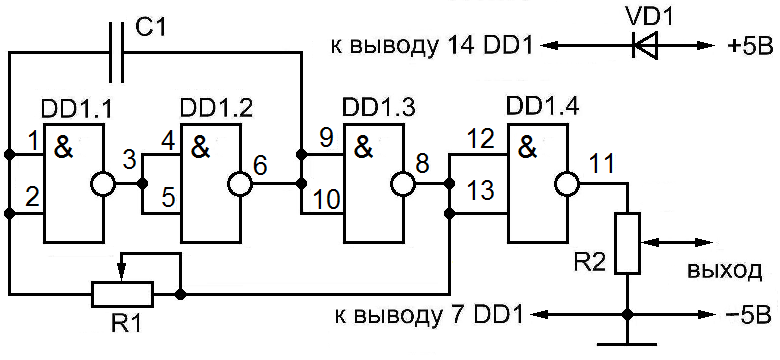

Генератор звуковых частот на микросхеме
Устройство можно использовать для проверки работы усилителей звуковой частоты. Генератор звуковых частот собран на микросхеме К155ЛА3, которая содержит 4 элемента 2И-НЕ. Непосредственно генератор образуют последовательно соединенные логические элементы DD1.1-DD1.3, включенные инверторами. Конденсатор C1 создает положительную обратную связь между выходом DD1.2 и входом DD1.1.

Таблица 1
| Обозначение | Наименование | Номинал |
|---|---|---|
| С1 | Конденсатор | 0,47 мкФ |
| DD1 | Микросхема | К155ЛА3 |
| R1 | Резистор постоянный | 680 Ом/0,25 Вт |
| R2 | Резистор переменный | 10 кОм |
Частоту импульсов можно изменять переменным резистором R1. Резистор R2 служит регулятором уровня выходного сигнала.
При указанных в схеме параметрах элементов, частоту импульсов можно менять в пределах 500...5000 Гц. Диод VD1 служит для защиты от подачи питания неправильной полярности, в качестве него подойдет любой маломощный диод, например Д220.
Напряжение питания — 5 В. Питание схемы можно осуществить от батареи напряжением 4,5 В (батарея типа 3336).